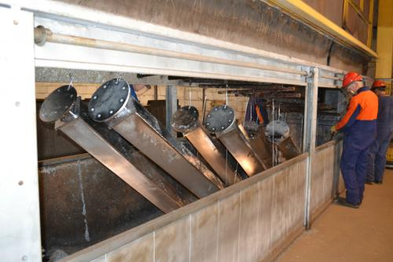
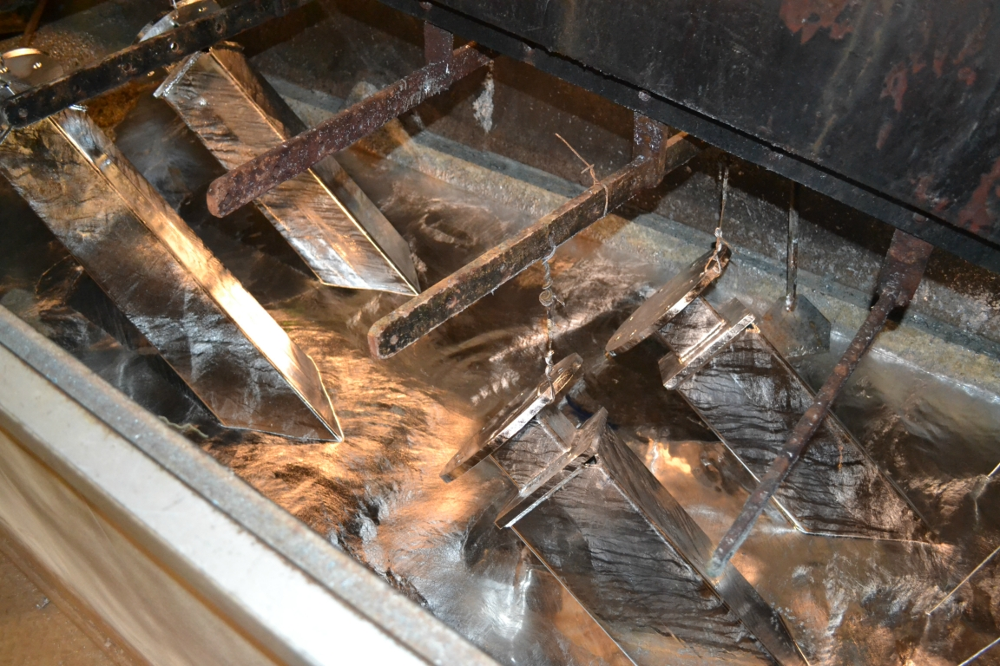
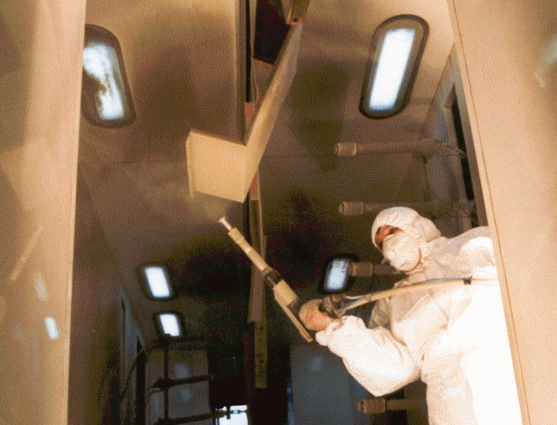

Smede Opgaver
DANNA APS udfører arbejde relateret til metalprodukter. Et stort udvalg af moderne metalforarbejdningsmaskiner (AMADA, TRUMATIC, MITSUBISHI, etc.) gør det nemt og muligt at lave forskellige slags produkter.
Der er mulighed for at lave zinkcoating til alle metalprodukter i størrelsen op til 13,0x1,5x3,0 meter. Tykkelsen af det belagte zinklag afhænger af metalets tykkelse, hvor lang tid produktet er i zinkbadet og zinkdispersionstemperaturen. Den optimale belægningstykkelse er 70-120 mikron. Men der er mulighed for 40-250 mikron (i den tykkere belægning begynder zink at skinne og falde af). Den optimale belægningstykkelse af produkter, som er tykkere end 3 mm, er 40-70 mikron.
Der er mulighed for at male metalprodukter med pulvermaling (max. L8xB1,5xH2,1 m).
Vi tilbyder primer og metalmaling.
Vores kvalificerede designere, konstruktører og erfarne medarbejdere producerer og installerer vores produkter.
Vi udfører kvalitetsarbejde inden for de aftalte deadlines og er altid med til at finde nye og bedre løsninger. Vi skræddersyer alle kunders ønsker.
Vi stræber altid efter den højeste kvalitet, langtidsholdbarhed, pålidelighed og ikke mindst et attraktivt og ønskeligt resultat.
 |
 |
|---|---|
|  |  |